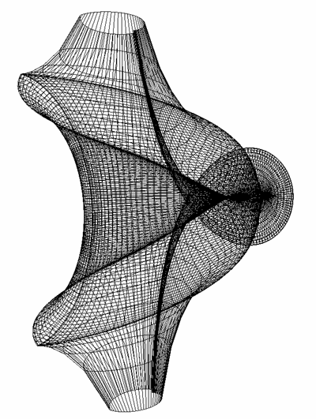
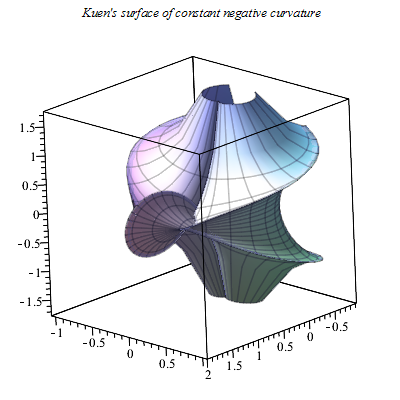

Kuen's Surface
The Kuen surface is a special case of Enneper's negative curvature surfaces.

Kuen's surface
Equation
\begin{align} \ x = \frac{2\big( \cos(u) + u\sin(u) \big) \sin(v)}{1+u^2\sin^2(v)} \\ \end{align} \begin{align} \ y = \frac{2\big( \sin(u) + u\cos(u) \big) \sin(v)}{1+u^2\sin^2(v)} \\ \end{align} \begin{align} \ z = \ln\big[ \tan( \frac{1}{2} v ) \big] + \frac{2\cos(v)}{1+u^2sin^2(v)} \\ \end{align}
for , $v \in [0,\pi)$, $u \in [0,2\pi)$.
Gaussian and mean Curvatures
The Gaussian and mean curvatures are
\begin{align} \ K = -1 \\ \end{align} \begin{align} \ H = -\frac{\csc(v)}{4u} + \frac{1}{4}u\sin(v)\bigg[ 1 + \frac{8}{2-u^2+u^2\cos(2v)} \bigg] \\ \end{align}
and the principal curvatures are
\begin{align} \ \kappa_1 = \frac{4u\sin(v)}{2-u^2+u^2\cos(2v)} \\ \end{align} \begin{align} \ \kappa_2 = - \frac{\big[2-u^2+u^2\cos(2v)\big]\csc(v)}{4u} \\ \end{align}
Maple Sample Code

w := 1 + u^2*sin(v)^2; x := 2*(cos(u)+u*sin(u))*sin(v)/w; y := 2*(sin(u)-u*cos(u))*sin(v)/w; z := log(tan(v/2)) + 2*cos(v)/w; plot3d([x,y,z], u=-4..4, v=0.05..Pi-0.05,title=`Kuen's surface of constant negative curvature`); # cleanup: x := x; y := y; z := z; w := w;
Sage Sample Code
var('u,v')
fx = (2*(cos(u) + u*sin(u))*sin(v))/(1+ u^2*sin(v)^2)
fy = (2*(sin(u) - u*cos(u))*sin(v))/(1+ u^2*sin(v)^2)
fz = log(tan(1/2 *v)) + (2*cos(v))/(1+ u^2*sin(v)^2)
parametric_plot3d([fx, fy, fz], (u, 0, 2*pi), (v, 0.01, pi-0.01), plot_points = [100,100], frame=False, color="purple")
To Developers
//Source code is not available
References